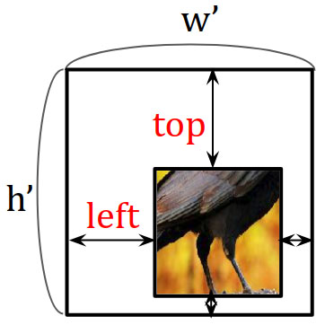
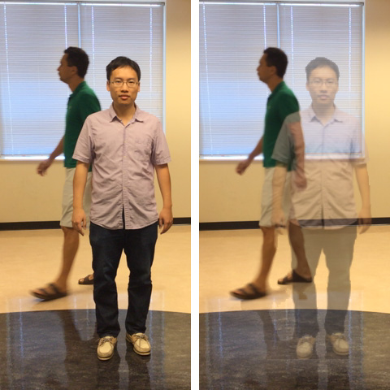
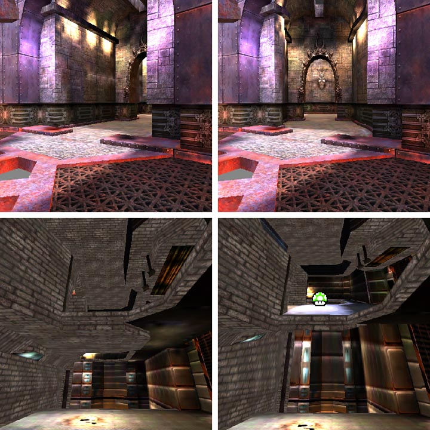
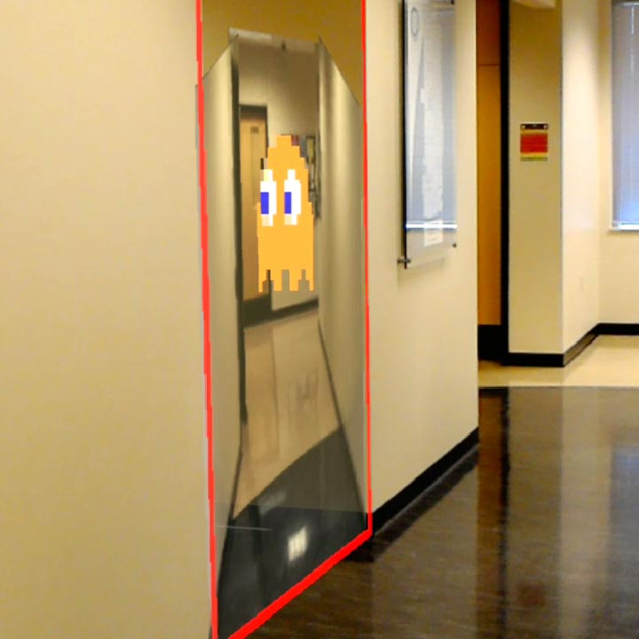
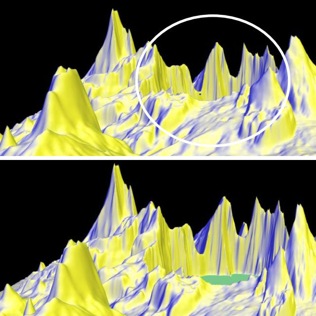
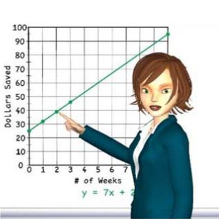
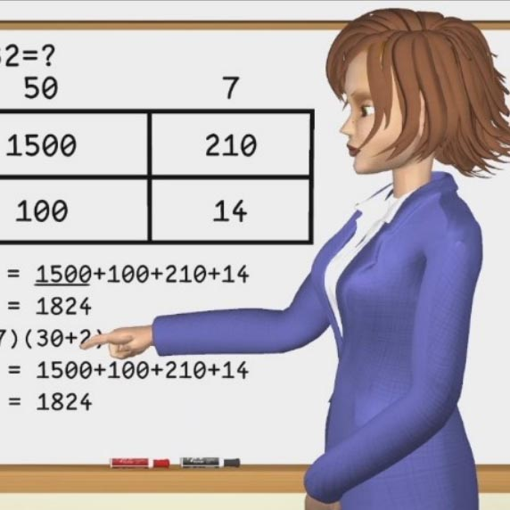

Meng-Lin Wu | 吳孟霖
Computer Graphics Researcher and Gradient Plumber
E-mail: m_l_wu@hotmail.com
LinkedIn
CV
Bio | Publications | Projects | Misc
Bio
Meng-Lin Wu received his Ph.D. from the Computer Graphics and Visualization Lab (CGVLAB) at Purdue University. He received B.S. and M.S. degrees in physics from National Taiwan University while participating in experimental high energy physics at KEK, Japan. Prior to joining Purdue, he developed game physics at International Games System.
His research is concerned with occlusion and visibility management in data visualization and mixed reality through novel sampling models. Specifically, he is interested in the approach of multi-viewpoint/timepoint rendering using non-linear sampling rays and non-uniform sampling rates.
Publications
 Robust Image Outpainting With Learnable Image Margins [IEEE]
Cheng-Yo Tan, Chiao-An Yang, Shang-Fu Chen, Meng-Lin Wu, Yu-Chiang Frank Wang
IEEE International Conference on Image Processing, 2021.
ICIP 2021
 RGBD Temporal Resampling for Real-Time Occlusion Removal [paper|video]
ML Wu, V Popescu
ACM SIGGRAPH Symposium on Interactive 3D Graphics and Games, 2019.
I3D 2019
 Anchored Multiperspective Visualization for Efficient VR Navigation [paper|video]
ML Wu, V Popescu
Virtual Reality and Augmented Reality, Lecture Notes in Computer Science, 2018.
EuroVR 2018
 Efficient VR and AR Navigation through Multiperspective Occlusion Management
[paper|video]
ML Wu, V Popescu
IEEE Transactions on Visualization and Computer Graphics, 2018. Presented at IEEE VR 2018
 Multiperspective Focus+Context Visualization [paper|video]
ML Wu, V Popescu
IEEE Transactions on Visualization and Computer Graphics, 2016.
 Digital learning activities delivered by eloquent instructor avatars:
scaling with problem instance
[ACM|paper]
S Anasingaraju, ML Wu, N Adamo-Villani, V Popescu, S W Cook, M Nathan, M Alibali
SIGGRAPH ASIA 2016 Symposium on Education
 Animation killed the video star [paper]
V Popescu, N Adamo-Villani, ML Wu, S D Rajasekaran, M Alibali, M Nathan, S W Cook
Proceedings of Gesture-based Interaction Design: Communication and Cognition
2014 CHI Workshop
Study of the K0L → π0π0ν¯ν decay [PRD]
R Ogata et al. (E391a Collaboration)
Phys. Rev. D 84, 052009, 2011
Search for the decay K0L → 3γ [PRD]
Y C Tung et al. (E391a Collaboration)
Phys. Rev. D 83, 031101(R), 2011
Experimental study of the decay K0L → π0ν¯ν [PRD]
J K Ahn et al. (E391a Collaboration)
Phys. Rev. D 81, 072004, 2010
Search for a Light Pseudoscalar Particle in the Decay K0L → π0π0X [PRL]
Y C Tung et al. (E391a Collaboration)
Phys. Rev. Lett. 102, 051802, 2009
Search for a light pseudoscalar particle in the decay K→π0π0X at the KEK-PS E391a experiment [PoS]
Y C Tung et al. (E391a Collaboration)
PoS, 040 2009
Search for X(214) in K0L→π0π0X(X→μ+μ−) using Back-Anti counter at the E391a experiment [PoS]
R Ogata et al. (E391a Collaboration)
PoS, 014 2009
Search for the Decay K0L → π0ν¯ν [PRL]
J K Ahn et al. (E391a Collaboration)
Phys. Rev. Lett. 100, 201802, 2008
Occlusion Management in Conventional and Head-Mounted Display Visualization through the Relaxation of the Single Viewpoint-Timepoint Constraint (PhD thesis)
ML Wu
Department of Computer Science, Purdue University, August 2019
Search for K0L decay to light pseudoscalar sgoldstino at E391a (MS thesis)
ML Wu
Department of Physics, National Taiwan University, December 2007
Projects
Misc
{kind=link}
I love flying! I hold the FAA Private Pilot Certificate since 2019, and I am a member of Purdue Pilots Inc. Here's my logbook so you know where I've been to.
{kind=link}
I love driving fast as well. I frolicked a few laps around the famous Nürburgring Nordschleife.